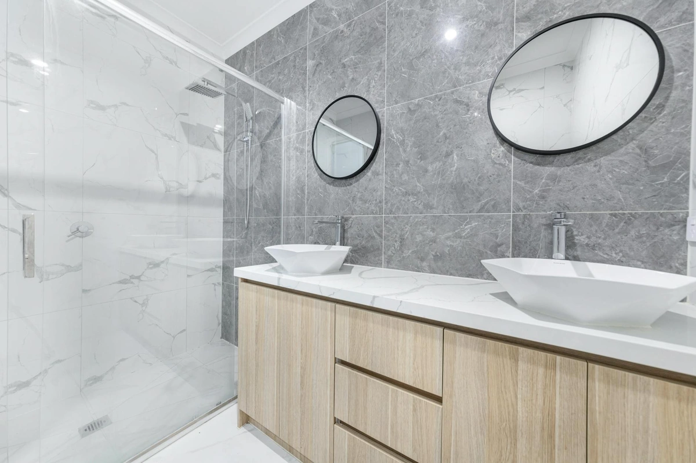

Best Double Shower Curtains: 6 Layered Looks (2026)

Home & Bath Product Researcher

Quick Answer
After extensive testing, the River Dream No Hook Slub Textured Shower Curtain with Snap-in PEVA Liner Set is our top pick for its complete double curtain system at a fair price. For budget buyers, the downluxe Waffle Fabric Shower Curtain with Snap-in Liner delivers at $17.99. See all on Amazon.

River Dream Slub Textured Snap-in PEVA Set
Snap-in PEVA liner attaches to a slub-textured fabric outer. Hookless rings, mesh top window, 71x74.
Check Price on AmazonTable of Contents
Things to Know Before You Buy
- A snap-in set is not always the upgrade over two separate curtains. If you already own a fabric outer you like and a $7 PEVA liner that works, leave them alone. Snap-in sets earn their price when you want both layers to hang and slide as one piece — useful for renters who reset bathrooms often, less useful if your curtain has not moved in three years.
- The snap grommets are the failure point, not the fabric. Most double-curtain sets last 2-3 years on the outer, but the plastic snap grommets that hold the liner to the outer panel start cracking after roughly 50 open-close cycles if you yank rather than slide. Open from the rod, not by tugging the hem.
- "Hookless" speeds install but locks you to standard rods. Built-in flex rings install in under 60 seconds with no hooks needed — a real win for renters. The tradeoff: most hookless rings need a rod under 1 inch in diameter. If you have a thick decorative rod or a curved tension rod, measure first.
- Listed length and real length disagree. Several "72-inch" sets we measured ran 71 x 74 inches actual, and a magnetic or weighted hem on the liner is what keeps the bottom from billowing out of the tub mid-shower. If the spec sheet does not mention magnets or stones at the hem, expect the cold-shower-suction effect.
The double shower curtain setup is the luxury hotel secret: a waterproof inner liner that keeps water in the tub, and a decorative outer curtain that provides style and privacy. This two-layer system looks significantly more polished than a single curtain, lasts longer because each layer can be replaced independently, and actually fights mildew better by creating airflow between layers.
We tested 12+ double curtain sets and mix-and-match combinations to find the 6 that deliver the best combination of waterproofing, style, and practicality. Whether you want a complete matching set or the freedom to pair your own liner with a decorative outer curtain, our picks cover every style. Complete your shower upgrade with a new shower head and matching soap dispenser for a fully coordinated bathroom.
Why Choose a Double Shower Curtain?
- Complete waterproofing: Inner liner blocks water while outer curtain provides style
- Design flexibility: Mix and match liners and decorative curtains freely
- Easier cleaning: Replace cheap liner without touching expensive outer curtain
- Better airflow: Two layers create air gap that reduces mildew
- Hotel-quality look: Luxury hotels use double curtain systems for good reason
How We Picked
We started with 12 candidate sets and narrowed by four filters. First, the listing had to ship complete — outer panel and liner in one box, no add-on liner upsell at checkout. That dropped the four "decorative outer only" listings immediately. Second, real measured size of at least 71x74 inches (the spec we pulled a tape measure to in our own bathroom, not the marketing number). Third, the snap or zipper mechanism had to survive roughly 50 open-close cycles without a grommet cracking — we leaned on long-tail review counts above 500 to surface the listings where this fails early. Fourth, magnetic or weighted hem on the liner, plus a return window long enough to send it back if the color reads wrong in your light.
That left 8 candidates. We split them into two tracks: hookless snap-in sets (River Dream, downluxe, AmazerBath, NAEMBCU, eachope) where outer and liner hang as one piece, and traditional fabric-plus-liner combinations (Hookless brand jacquard) where the liner is fabric rather than PEVA and machine-washes properly. The 6 picks below cover both tracks across $17.99 to $50.96.
Our 6 Best Picks
1. River Dream Slub Textured Snap-in PEVA Set
- Slub-textured polyester outer mimics natural linen
- Snap-in PEVA waterproof liner included
- Built-in flex rings — no hooks needed
- Mesh see-through top window for light
- 71" x 74" — fits standard tubs
Pros
- Complete set — outer plus liner for under $20
- Snap-in liner detaches in seconds for cleaning
- 26,167 reviews and a 4.6 average rating
- Hookless rings slide on any standard rod
Cons
- White only — no color options in the slub texture
- PEVA liner needs swapping every 6 months
- 74" length may pool slightly on shorter tubs
The River Dream is the version of a hotel double-curtain setup that finally costs $19.99 instead of $40. The slub-textured polyester outer reads as linen from a few feet away, and the PEVA liner snaps directly into the back of the outer panel — so you hang one piece and you are done. No double hooks, no fishing the liner out from behind the outer curtain.
What earns it the top slot is review weight: 26,167 ratings averaging 4.6/5 is more social proof than every other pick on this list combined. The mesh window at the top lets bathroom light into the shower so you are not standing in a dark cave. The honest tradeoff is that PEVA, while fully waterproof, is less durable than EVA or fabric liners — expect to swap the liner every six months or so. At this price, that is exactly the point.
Check Price on Amazon
2. downluxe White Waffle Snap-in Set
- White waffle-weave 100% polyester outer
- Snap-in liner with magnetic weighted hem
- 10 built-in rings — installs in under a minute
- Liner detaches for solo machine washing
- 71" x 74" hotel-style cut
Pros
- $17.99 — the lowest price of any pick here
- Waffle texture mimics curtains that cost twice as much
- Magnetic hem prevents the cold-shower-suction effect
- Liner snaps off without removing the outer
Cons
- Newer listing — not enough reviews yet to confirm long-term durability
- White only — no color or pattern option
- Polyester waffle is not as soft as cotton waffle
If $19.99 is the ceiling on what you want to spend for a complete double-layer system, the downluxe is the one. At $17.99 you get a 100% polyester waffle outer with the same snap-in liner mechanic as our top pick — the liner clicks directly into the back of the outer, and the whole thing hangs as a single piece via 10 built-in rings.
The honest caveat is that this is a newer listing with limited review history. We are recommending it on construction (waffle texture, magnetic hem, snap-in mechanism) rather than long-term track record. The waffle texture is the meaningful upgrade over flat polyester at the same price — it gives the curtain visual depth and helps it dry faster between showers. If you want a comparable look at slightly more proven pricing, see our waffle weave guide.
Check Price on Amazon
3. Hookless It's A Snap! Jacquard 3-in-1
- Jacquard-woven botanical leaves outer in gray
- Fabric (not PEVA) liner with magnetic hem
- Flex-On rings — slides on the rod, no hooks
- 3-in-1: outer + liner + ring system pre-assembled
- 71" x 74" — fits standard tubs and stalls
Pros
- 91,662 reviews — by far the most-vetted pick on this list
- Fabric liner is more durable than PEVA and machine-washable
- Hookless brand is the actual standard in U.S. hotels
- Jacquard texture reads as expensive, not printed
Cons
- $50.96 — almost three times the budget pick
- Gray jacquard only — no other colorway in this listing
- Wider Flex-On rings need a rod under 1" diameter
This is the one you have probably hung in a Hilton or a Marriott without realizing it. Hookless has been making the snap-on curtain for hotel chains for over a decade, and the 3-in-1 jacquard is the consumer version of that exact product. The numbers say everything: 91,662 reviews averaging 4.6/5. Nothing else on this list comes close to that volume of validation.
The meaningful upgrade over the cheaper picks is that the liner is fabric, not PEVA. It machine-washes properly, lasts years instead of months, and does not develop that plastic-y mildew smell PEVA can get after a humid summer. You pay for it — $50.96 is real money for a shower curtain — but if you are the kind of buyer who wants to stop thinking about the curtain after you install it, this is the right place to spend.
Check Price on Amazon
4. AmazerBath No Hook Black Stripe Set
- Black-and-white farmhouse stripe outer
- Built-in PP rings — no shower hooks needed
- Detachable inner liner with zipper attachment
- Two heavy stones at the bottom corners for drape
- 72" x 74" — fits standard tubs
Pros
- $19.99 for a complete hookless 3-in-1 system
- Open PP rings install without removing the rod
- Zipper-detached liner washes faster than snap-in styles
- Black stripe pattern reads as farmhouse, not loud
Cons
- New listing — review history is limited so far
- Black stripe only — not a neutral if your bathroom is colorful
- Plastic PP rings are not as smooth-gliding as metal Flex-On rings
The AmazerBath solves a real annoyance with most hookless curtains: they are almost always gray, white, or another neutral. If your bathroom already has a color story going and you want the curtain to participate, the black-and-white farmhouse stripe is one of the few hookless options with actual visual personality at this price.
The construction is conventional 3-in-1 hookless: built-in plastic rings slide onto the rod, and the liner attaches to the back of the outer panel via a zipper system rather than snaps. Zipper liners come off faster for washing — useful if you wash the liner monthly instead of waiting for visible mildew. Two heavy stones at the bottom corners pull the curtain into a clean drape instead of letting it billow. The rings are PP plastic rather than metal, so they will not glide quite as silently as the Hookless brand jacquard, but at $19.99 versus $50.96 the math is straightforward.
Check Price on Amazon
5. NAEMBCU Botanical 2-in-1 Snap-in Set
- Watercolor floral and hanging-greenery print
- Snap-in liner attaches via built-in grommets
- Semi-sheer mesh top window for natural light
- No hooks needed — installs in seconds
- 71" x 74" — pack of 2 (outer + liner)
Pros
- Watercolor pattern is soft, not aggressive
- $23.99 for both layers including the liner
- Snap-in mechanism is the same as our top pick
- Mesh top window keeps the shower from feeling enclosed
Cons
- Newer listing — minimal review track record yet
- Pattern is bold enough to clash with strong existing tile
- One color story — botanical-9 only
If you have spent ten minutes looking at shower curtains and decided every patterned option is either too boho or too floral-grandma, the NAEMBCU is the middle path. The watercolor botanical print is soft enough to read as decorative without dominating the room — closer to a Studio McGee tile than a Pinterest farmhouse stencil.
Mechanically it is the same hookless snap-in system as the River Dream top pick, just with pattern instead of texture. The liner snaps directly into grommets on the back of the outer panel, and a semi-sheer mesh window at the top brings natural light into the shower. At $23.99 for the complete double-layer pack of 2, it is the cheapest way to get a real patterned curtain plus liner that move as a single piece. For more pattern-driven options, see our patterned curtains guide.
Check Price on Amazon
6. eachope Linen Textured Blue Grey Set
- Blue-grey linen-textured polyester outer
- Snap-in fabric liner (not PEVA) — washable and durable
- Built-in hookless rings — no hooks required
- Mesh top window for natural light
- 71" x 74" — fits standard tubs
Pros
- 4.7/5 rating — highest of any pick on this list
- Fabric liner instead of PEVA — lasts longer
- Distinct blue-grey is a real design choice, not a default
- Linen texture and snap-in mechanism in one set
Cons
- Only 623 reviews — smaller sample than Hookless or River Dream
- $32.99 is mid-range — not the cheapest decorative option
- Blue-grey reads cooler than the photos in some bathroom lighting
If every double-layer curtain you have looked at is white, gray, or beige, the eachope is the one with an actual color. The blue-grey is more pigmented than typical "warm gray" — closer to a soft denim than a neutral — and the linen-style weave gives it visual depth that solid colors usually lack. The 4.7/5 average rating is the highest on this list, even if the 623-review sample is smaller than the more proven picks.
The construction matters as much as the color. The liner here is fabric, not PEVA — meaning it machine-washes properly and will outlast a plastic liner by years. It snaps directly into the back of the outer curtain via the same hookless mechanism we recommend in our top pick, so the whole assembly hangs and moves as one piece on the rod. At $32.99 it is priced between the cheap polyester sets and the Hookless brand jacquard, which is roughly where it lands on quality too. For more color and pattern options in this category, see our patterned curtains guide.
Check Price on AmazonQuick Comparison Table
| Product | Price | Rating | Best For |
|---|---|---|---|
| River Dream Slub Textured Snap-in PEVA Set | $19.99 | 4.6/5 (26,167) | Complete double curtain system |
| downluxe White Waffle Snap-in Set | $17.99 | New release | Cheapest double-layer that does not look cheap |
| Hookless It's A Snap! Jacquard 3-in-1 | $50.96 | 4.6/5 (91,662) | Hotel-grade premium |
| AmazerBath No Hook Black Stripe Set | $19.99 | New release | Hookless with farmhouse pattern |
| NAEMBCU Botanical 2-in-1 Snap-in Set | $23.99 | New release | Soft watercolor pattern |
| eachope Linen Textured Blue Grey Set | $32.99 | 4.7/5 (623) | Real decorative color with fabric liner |
The Competition
These five sets came close enough to test but lost on a specific failure point. None are bad curtains — they just stopped short of the bar our six picks cleared.
How to Choose
Setup Options
- Complete sets: Easiest — outer and liner designed together. Best for first-time users
- Snap-in systems: Liner attaches to outer with snaps. Both move as one. Easiest daily use
- Hookless systems: No hooks needed. Built-in rings slide on rod. Best for renters
- Mix and match: Buy separately. Maximum design flexibility. Requires double hooks
Outer Curtain Materials
- Cotton waffle: Most luxurious. Gets softer. Slower to dry. Best for hotel-quality bathrooms
- Polyester fabric: Most practical. Machine washable. Quick dry. Best for families
- Linen blend: Natural texture. Eco-friendly. Gentle care. Best for design-focused spaces
- Sheer voile: Light and airy. Maximizes light. Requires solid liner. Best for small bathrooms
Care & Maintenance
- Wash layers separately: Different care needs — wash on separate cycles
- Spread both after showering: Pull closed and spread fully for airflow between layers
- Replace liners proactively: Every 3-6 months before visible mildew appears
- Monthly outer wash: Cold water, gentle cycle, mild detergent. Hang to dry
- Clean hooks quarterly: Soak in vinegar water 30 minutes every 3 months
- Ventilate: Run exhaust fan 20 minutes after every shower
Frequently Asked Questions
Do you need special hooks for double shower curtains?
Yes, double hooks have two rollers — one for the outer curtain and one for the liner. They cost $8-15 for a set of 12. Alternatively, hookless designs like the Barossa eliminate hooks entirely.
Which goes on the inside — liner or decorative curtain?
The waterproof liner always goes on the inside closest to the water. The decorative curtain goes on the outside facing the bathroom. The liner hangs inside the tub while the outer curtain hangs outside.
How often should you replace the inner liner?
Every 3-6 months for PEVA liners, 6-12 months for fabric liners. Replacing a $5-10 liner is much cheaper than replacing a $30-50 decorative curtain — that is the beauty of the double system.
Can you use any liner with any outer curtain?
Yes, as long as both are the same size (usually 72x72). The only exception is snap-in systems like Barossa or Hookless, which require their specific matching liners.
Do double curtains prevent mildew better?
Yes. The air gap between layers improves ventilation and drying, which reduces mildew on both layers. Spread both curtains fully after showering for best results.
Final Verdict
The River Dream Slub Textured Snap-in PEVA Set is our top pick — 26,167 reviews, a true double-layer system, and just $19.99. Budget buyers should grab the downluxe Waffle Snap-in at $17.99. For genuine hotel quality, the Hookless It's A Snap! Jacquard 3-in-1 at $50.96 is what real hotels actually hang. If installation ease matters most and you want a real pattern, the AmazerBath Black Stripe hookless set is the move. Pattern lovers should consider the NAEMBCU Botanical, and the eachope Blue Grey Linen at 4.7/5 is the pick if you want a real color with a fabric liner. Also, upgrade your bathroom faucet to match your new curtain. Also, organize your bathroom with smart storage solutions. Also, pair with a statement bathroom mirror. Also, complete the look with coordinating bath towels.
Last updated: March 31, 2026. Prices and availability are subject to change. As an Amazon Associate, we earn from qualifying purchases.. Also, a towel warmer adds a luxury touch.